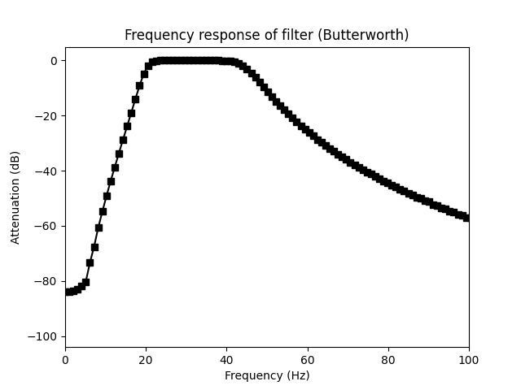
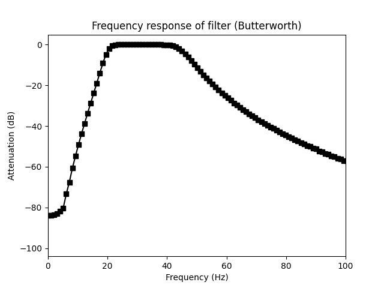

filtering package
Submodules
FIR vs IRR FIR
IRR
Name
Finite Impulse response
Infinite impulse response
Kernel length
long
short
speed
slower
fast
stability
high
data-dependent
mechanism
multiply data with kernel
multiply data with kernel a then b
filtering.FIR module
- FIR_filter_example()[source]
Example of FIR filter for a narrowband filter
1. Creation of the filter kernel using FIR funtion
Creation of the input of the FIR function

Output of the FIR function is the kernel
2. Analysis of the frequency response
Analysis of the frequency response in comparison of the ideal response

In dB (it allows to see more details)
filtering.IIR module
- IRR_filter()[source]
1. Creation of the filter kernel using butter funtion
The IRR filter are composed of two kernel, often call “a” and “b”.

2. Analysis of the frequency response

As IRR kernel are from very little order (comparing to FIR)
- e.g. butter filter from order 4 means the Kernel signal will be composed
of only 4*2+1 points. These lead in only 6 point in the frequency domain.
A better way to evaluate the kernel function is to filter a basic impulse response (arr = [0, 0, 1, 0, 0]) and take a look at its frequency response

 
